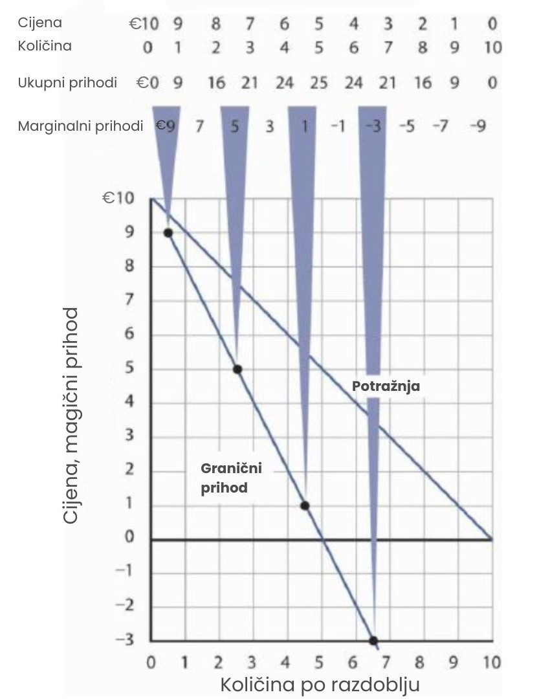

Model monopola
Analiziranje odluka predstavlja složeniji izazov za monopolsku tvrtku nego za tvrtku u savršenoj konkurenciji. Naime, poduzeće u savršenoj konkurenciji prihvaća tržišnu cijenu kao zadanu i na temelju nje određuje količinu proizvodnje koja mu donosi najveći profit. S druge strane, monopol, budući da je jedini ponuđač na tržištu, može samostalno određivati ne samo količinu proizvodnje nego i cijenu proizvoda. Koje će odluke o cijeni i količini proizvodnje takvo poduzeće donositi?
Na to ćemo pitanje odgovoriti primjenom pravila marginalne odluke: poduzeće će proizvoditi dodatne jedinice proizvoda sve dok su granični prihodi jednaki graničnim troškovima. Kako bismo to pravilo primijenili na monopol, prvo moramo istražiti poseban odnos između potražnje i graničnih prihoda kod monopola.
Monopol i tržišna potražnja
Budući da monopol ima cijelo tržište za sebe, suočava se s tržišnom krivuljom potražnje. Na slici su uspoređene situacije potražnje s kojima se suočava monopol i poduzeće u savršenoj konkurenciji. Na dijagramu (a), ravnotežna cijena za poduzeće u savršenoj konkurenciji određena je presjekom krivulja potražnje i ponude. Tržišna krivulja ponude dobiva se jednostavnim zbrajanjem krivulja ponude pojedinačnih poduzeća. Te krivulje ponude zapravo predstavljaju dijelove njihovih krivulja graničnih troškova koji se nalaze iznad krivulje prosječnih varijabilnih troškova. Krivulja graničnih troškova (MC) za jedno poduzeće prikazana je na slici. Primijetite prekid na horizontalnoj osi koji ukazuje na to da je količina koju proizvodi pojedino poduzeće zanemarivo mali udio u ukupnoj proizvodnji na tržištu. U modelu savršene konkurencije, jedno poduzeće ne utječe na određivanje tržišne cijene. Svako poduzeće u takvoj industriji suočeno je s horizontalnom krivuljom potražnje, koja je određena tržišnom cijenom.
Dijagram (a) prikazuje određivanje ravnotežne cijene i količine u tržištu savršene konkurencije. Tipično poduzeće s krivuljom graničnih troškova (MC) u tom slučaju prihvaća tržišnu cijenu, ono je cjenovni primatelj (price taker). Odabire proizvoditi količinu q pri ravnotežnoj cijeni P. Nasuprot tome, dijagram (b) prikazuje situaciju monopola koji se suočava s opadajućom tržišnom krivuljom potražnje. Kao maksimizator profita, monopol najprije određuje količinu proizvodnje koja mu donosi najveći profit. Jednom kad odluči koju će količinu proizvoditi, cijena po kojoj može prodati tu količinu određuje se s obzirom na krivulju potražnje. Drugim riječima, monopol može prodavati dodatne jedinice proizvoda samo ako snizi cijenu.
Za razliku od toga, poduzeće u savršenoj konkurenciji može prodati bilo koju količinu po tržišnoj cijeni ono se ne mora brinuti o promjeni cijene kad mijenja količinu. Usporedimo sada situaciju s dijagrama (a) s onom koju monopol ima na dijagramu (b). Budući da je jedini ponuđač u industriji, monopolist se suočava s cijelom tržišnom potražnjom, to jest, s opadajućom krivuljom potražnje. Može odabrati bilo koju količinu za proizvodnju, ali za razliku od konkurentskog poduzeća, da bi povećao količinu prodaje, mora sniziti cijenu.
Primjerice, ako monopol može prodati količinu Q1 po cijeni P1 (na dijagramu b), tada, želi li povećati prodaju na Q2, mora sniziti cijenu na P2. Da bi prodao količinu Q3, mora sniziti cijenu još više, na P3. Iako monopol može birati i cijenu i količinu, ograničen je kombinacijama koje leže na krivulji potražnje – ne može, primjerice, prodati količinu Q3 po cijeni P1. Da bi neko poduzeće bilo cjenovni određivač (price setter), mora se suočavati s opadajućom krivuljom potražnje.
Ukupni prihod i cjenovna elastičnost
Cjenovna elastičnost potražnje s kojom se suočava poduzeće ima važan utjecaj na procjenu učinka promjene cijene na ukupni prihod. Također, cjenovna elastičnost potražnje može varirati na različitim točkama duž krivulje potražnje poduzeća. U ovom ćemo odjeljku objasniti zašto će monopol uvijek odabrati cijenu u elastičnom dijelu svoje krivulje potražnje.
Pretpostavimo da je krivulja potražnje s kojom se suočava monopol dano jednadžbom, pri čemu je Q količina tražena u jedinici vremena, a P cijena po jedinici:
Ova jednadžba potražnje prikazuje raspored potražnje prikazan na sljedećoj slici. Ukupni prihod za svaku količinu jednak je umnošku te količine i cijene po kojoj se ta količina traži. Krivulja ukupnog prihoda monopolskog poduzeća prikazana je na dijagramu (b). Budući da monopolist mora sniziti cijenu svake jedinice proizvoda kako bi povećao prodaju, ukupni prihod ne raste uvijek s porastom proizvodnje. U ovom slučaju, ukupni prihod doseže maksimum od 25€ kada se proda 5 jedinica. Nakon te točke, dakle, pri količinama većim od 5 jedinica, ukupni prihod počinje padati.
Pretpostavimo da se monopolist suočava s opadajućom krivuljom potražnje prikazanom na dijagramu (a). Da bi povećao prodanu količinu, mora sniziti cijenu. Ukupni prihod izračunava se množenjem cijene i količine prodane pri toj cijeni. Ukupni prihod, prikazan na dijagramu (b), doseže maksimum od 25€ kada se proda 5 jedinica po cijeni od 5€. U toj točki krivulje potražnje, cjenovna elastičnost potražnje iznosi -1.
Krivulja potražnje na dijagramu (a) prikazane slike prikazuje raspon vrijednosti cjenovne elastičnosti potražnje. Naučili smo da se elastičnost cijene mijenja duž linearne krivulje potražnje na specifičan način: potražnja je elastična u gornjoj polovici krivulje potražnje, a neelastična u donjoj polovici. Ako je potražnja elastična, smanjenje cijene povećava ukupni prihod. Da bi prodao dodatnu jedinicu, monopol mora sniziti cijenu, ali će prihod svejedno porasti jer je postotno povećanje količine veće od postotnog smanjenja cijene. Elastični dio krivulje potražnje odgovara dijelu krivulje ukupnog prihoda na dijagramu (b) gdje ona raste.
Ako je potražnja neelastična, tada smanjenje cijene smanjuje ukupni prihod jer postotno povećanje tražene količine nije dovoljno da nadoknadi pad cijene. Ukupni prihod opada dok poduzeće prodaje dodatne jedinice unutar neelastičnog dijela krivulje potražnje. Padajući dio krivulje ukupnog prihoda na dijagramu (b) odgovara tom neelastičnom rasponu potražnje.
Podsjetimo se i da sredina linearne krivulje potražnje označava točku u kojoj potražnja postaje jedinično elastična, točka gdje je elastičnost točno -1. Na dijagramu (b), ta točka odgovara maksimumu ukupnog prihoda.
Ovaj odnos između cjenovne elastičnosti, potražnje i ukupnog prihoda ima važnu posljedicu za izbor cijene i količine koje maksimiziraju profit: Monopol nikada neće odabrati cijenu i količinu u neelastičnom dijelu krivulje potražnje. Primjerice, ako monopol sa slike naplaćuje cijenu od 3€ i prodaje 7 jedinica, njegov ukupni prihod iznosi 21€. Budući da je ta kombinacija u neelastičnom dijelu krivulje potražnje, poduzeće bi moglo povećati ukupni prihod povećanjem cijene. Istovremeno bi smanjilo i ukupne troškove jer bi smanjilo proizvodnju. Dakle, ako monopol djeluje u neelastičnom dijelu svoje krivulje potražnje, ne maksimizira profit. Viši profit bi ostvario povećanjem cijene i smanjenjem količine. Zato će monopol nastaviti povećavati cijenu i smanjivati količinu sve dok se ne pomakne u elastični dio svoje krivulje potražnje. Profit-maksimizirajući monopol uvijek će odabrati kombinaciju cijene i količine unutar elastičnog dijela potražnje.
Naravno, poduzeće može odabrati i točku na kojoj je potražnja jedinično elastična, u toj točki je ukupni prihod najveći. No cilj monopola nije maksimizacija prihoda, nego maksimizacija profita. Rješenje koje maksimizira prihod neće nužno maksimizirati profit, osim ako su granični troškovi jednaki nuli.
Potražnja i granični prihod
U slučaju savršene konkurencije, dodatni prihod koji poduzeće ostvaruje prodajom dodatne jedinice — tzv. granični prihod — jednak je tržišnoj cijeni. Krivulja potražnje poduzeća, koja je vodoravna linija na razini tržišne cijene, ujedno je i njegova krivulja graničnog prihoda. Međutim, monopol može prodati dodatnu jedinicu samo ako snizi cijenu. Ta činjenica komplicira odnos između krivulje potražnje monopola i njegovog graničnog prihoda.
Pretpostavimo da poduzeće s prethodne slike prodaje 2 jedinice po cijeni od 8 eura po jedinici. Ukupni prihod tada iznosi 16 eura. Sada želi prodati i treću jedinicu i zanima ga koliki je granični prihod te jedinice. Da bi prodalo 3 jedinice umjesto 2, poduzeće mora sniziti cijenu na 7 eura po jedinici. Ukupni prihod tada raste na 21€. Granični prihod treće jedinice stoga iznosi 5 eura. Međutim, cijena po kojoj poduzeće prodaje 3 jedinice iznosi 7 eura. Dakle, granični prihod je manji od cijene.
Da bismo razumjeli zašto je granični prihod treće jedinice manji od njezine cijene, moramo pažljivije analizirati kako prodaja te jedinice utječe na prihode poduzeća. Poduzeće ostvari 7 eura od prodaje treće jedinice. No, kako bi je prodalo, moralo je sniziti cijenu sa 8 na 7 eura — ne samo za treću jedinicu, već i za prve dvije. Time sada ostvaruje manji prihod i za prve dvije jedinice. Na svakoj od njih izgubi po 1 euro, ukupno 2 eura. Dakle, granični prihod treće jedinice je: 7 eura (od treće jedinice) - 2 eura (gubitak na prve dvije) = 5 eura.
Granični prihod je manji od cijene za monopol. Sljedeća slika prikazuje odnos između potražnje i graničnog prihoda, temeljen na krivulji potražnje s prethodne slike. Kao i obično, granične vrijednosti se prikazuju u sredinama intervala.
Krivulja graničnog prihoda za monopolskog proizvođača nalazi se ispod njegove krivulje potražnje. Ona prikazuje dodatni prihod ostvaren prodajom dodatne jedinice. Kao i uvijek, granične vrijednosti se prikazuju na sredinama odgovarajućih intervala.
Kada je krivulja potražnje linearna, kao na slici, krivulja graničnog prihoda može se nacrtati prema sljedećim pravilima: krivulja graničnog prihoda uvijek se nalazi ispod krivulje potražnje, i prepolovljuje bilo koju vodoravnu liniju povučenu između okomite osi (osi y) i krivulje potražnje. Drugim riječima, krivulja graničnog prihoda bit će dvostruko strmija od krivulje potražnje. Krivulja potražnje na slici dana je jednadžbom Q = 10 - P, što se može zapisati i kao P = 10 - Q. Krivulja graničnog prihoda dana je jednadžbom P = 10 - 2Q, što znači da je dvostruko strmija od krivulje potražnje.
Krivulje graničnog prihoda i potražnje prate ova pravila. Krivulja graničnog prihoda nalazi se ispod krivulje potražnje i prepolovljuje bilo koju vodoravnu liniju povučenu od vertikalne osi do krivulje potražnje. Na primjer, kod cijene od 6€ tražena količina je 4. Krivulja graničnog prihoda tada prolazi kroz količinu 2. Kod cijene od 0, tražena količina je 10; krivulja graničnog prihoda tada prolazi kroz količinu 5.
Baš kao što postoji veza između krivulje potražnje poduzeća i cjenovne elastičnosti potražnje, postoji i veza između krivulje graničnog prihoda i elastičnosti. Tamo gdje je granični prihod pozitivan, potražnja je cjenovno elastična. Tamo gdje je granični prihod negativan, potražnja je cjenovno neelastična. Tamo gdje je granični prihod jednak nuli, potražnja je jedinično elastična.
Kada je granični prihod pozitivan, potražnja je cjenovno elastična.
Kada je granični prihod negativan, potražnja je cjenovno neelastična.
Kada je granični prihod nula, potražnja je jedinično cjenovno elastična.
Poduzeće ne bi proizvodilo dodatnu jedinicu outputa ako je granični prihod negativan. Također, pod pretpostavkom da proizvodnja dodatne jedinice ima određeni trošak, poduzeće ne bi proizvodilo tu dodatnu jedinicu ni ako je granični prihod jednak nuli. Budući da će monopolsko poduzeće općenito poslovati u području gdje je granični prihod pozitivan, ponovno vidimo da će djelovati u elastičnom dijelu svoje krivulje potražnje.
Ravnoteža monopola: primjena pravila granične odluke
Ponašanje usmjereno na maksimizaciju profita uvijek se temelji na pravilu granične odluke: dodatne jedinice nekog dobra treba proizvoditi sve dok je granični prihod od te dodatne jedinice veći od graničnog troška. Rješenje koje maksimizira profit nalazi se tamo gdje se granični prihod izjednačava s graničnim troškom. Kao i uvijek, poduzeća nastoje maksimizirati ekonomski profit, a troškovi se mjere u ekonomskom smislu, odnosno kao alternativni trošak.
Slika u nastavku prikazuje krivulju potražnje i pripadajuću krivulju graničnog prihoda s kojom se suočava monopolsko poduzeće. Krivulja graničnog troška izgleda kao one koje smo ranije izveli: ona opada u rasponu outputa u kojem poduzeće doživljava rastuće granične prinose, a zatim raste kako poduzeće prelazi u fazu opadajućih graničnih prinosa.
Monopolsko poduzeće maksimizira profit proizvodnjom količine Qm u točki G, gdje se sijeku krivulje graničnog prihoda i graničnog troška. Tu količinu prodaje po cijeni Pm.
Kako bismo odredili količinu koja maksimizira profit, gledamo na koju se količinu sijeku krivulje graničnog prihoda i graničnog troška (Qm na slici). Zatim od te količine idemo vertikalno prema gore do krivulje potražnje da bismo pronašli cijenu Pm po kojoj poduzeće može prodati tu količinu po razdoblju. Cijena i količina koje maksimiziraju profit dane su točkom E na krivulji potražnje.
Dakle, cijenu i količinu koje maksimiziraju profit monopolske firme određujemo u tri koraka:
- Odredi krivulje potražnje, graničnog prihoda i graničnog troška.
- Odaberi razinu outputa na kojoj se sijeku krivulje graničnog prihoda i graničnog troška.
- Na temelju krivulje potražnje odredi cijenu po kojoj se ta količina može prodati.
Profit monopolske firme po jedinici jednak je razlici između cijene i prosječnog ukupnog troška. Ukupan profit jednak je profitu po jedinici pomnoženom s proizvedenom količinom. Ukupan profit prikazan je površinom zasjenjenog pravokutnika ATCmPmEF.
Nakon što odredimo cijenu i količinu monopolske firme, možemo izračunati njezin ekonomski profit tako da na grafikon s krivuljama potražnje, graničnog prihoda i graničnog troška dodamo i krivulju prosječnog ukupnog troška, kao što je prikazano na slici. Prosječni ukupni trošak (ATC) pri proizvodnji količine Qm je ATCm. Profit po jedinici iznosi Pm - ATCm. Ukupan profit dobiva se množenjem proizvodnje firme, Qm, s profitom po jedinici, pa je ukupan profit jednak Qm(Pm - ATCm), površini zasjenjenog pravokutnika na slici.
Razbijanje mitova o monopolu
Tri su česta pogrešna shvaćanja o monopolu:
- Budući da nemaju rivala koji prodaju iste proizvode, monopolske firme mogu naplatiti što god žele.
- Monopolisti će naplatiti „koliko god tržište može podnijeti“.
- Budući da monopolske firme imaju cijelo tržište za sebe, zajamčena im je ogromna dobit.
Nakon što monopolska firma odredi broj jedinica proizvodnje koji maksimizira profit, cijena po kojoj može prodati tu količinu dobiva se „čitanjem“ cijene s krivulje potražnje za tu količinu. Ako pokuša prodati količinu Qm po cijeni višoj od Pm, dio proizvodnje ostat će neprodan. Monopolska firma može postaviti svoju cijenu, ali je ograničena na kombinacije cijene i količine koje leže na njezinoj krivulji potražnje. Ne može jednostavno „naplatiti što god želi“. A ako „naplati koliko god tržište može podnijeti“, prodat će ili ništa, ili u najboljem slučaju jednu jedinicu proizvodnje.
Također, monopolskoj firmi nije zajamčen profit. Pogledajmo zadnju sliku. Pretpostavimo da krivulja prosječnog ukupnog troška, umjesto da leži ispod krivulje potražnje za neke razine proizvodnje, u cijelosti leži iznad krivulje potražnje. U tom slučaju, monopol će imati gubitke bez obzira na to koju cijenu odabere, jer će prosječni ukupni trošak uvijek biti veći od bilo koje cijene koju bi mogao naplatiti. Kao i u savršenoj konkurenciji, monopolska firma može nastaviti proizvodnju u kratkom roku sve dok cijena prelazi prosječni varijabilni trošak. U dugom roku, ostat će u poslovanju samo ako može pokriti sve svoje troškove.
Sažetak
- Ako se poduzeće suočava s krivuljom potražnje koja pada, granični prihod je manji od cijene.
- Granični prihod je pozitivan u elastičnom dijelu krivulje potražnje, negativan u neelastičnom dijelu, a jednak nuli kada je potražnja jedinično elastična.
- Ako se monopolska firma suočava s linearnom krivuljom potražnje, njezina krivulja graničnog prihoda također je linearna, leži ispod krivulje potražnje i presijeca bilo koju horizontalnu liniju povučenu od okomite osi do krivulje potražnje.
- Za maksimizaciju profita ili minimizaciju gubitaka, monopolska firma proizvodi količinu pri kojoj su granični trošak i granični prihod jednaki. Cijena se određuje kao točka na krivulji potražnje koja odgovara toj količini.